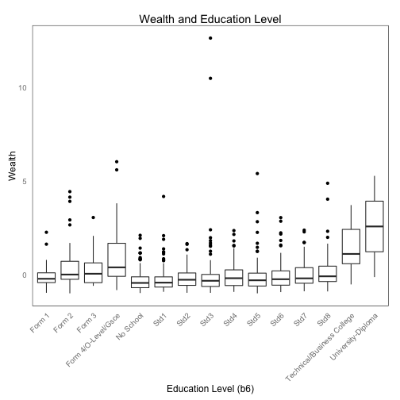
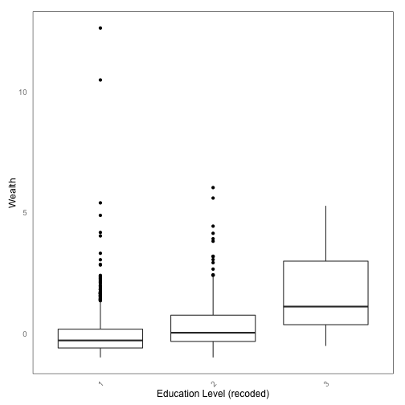
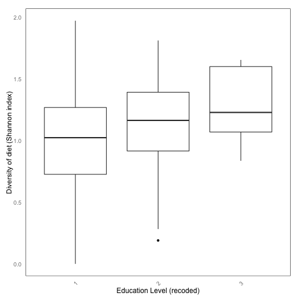
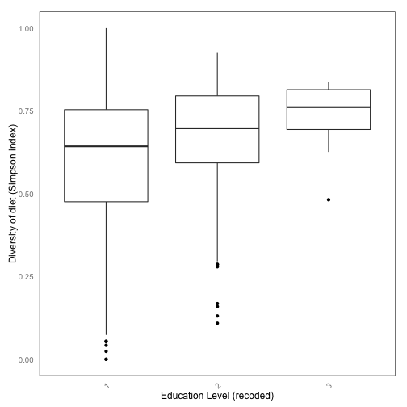
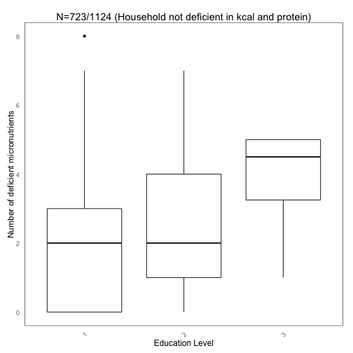

library(ggplot2) fp.mwi.nutr <- "/Users/angelmak/Dropbox/git/nutrition_indicators/Malawi/mwi_nutrition.csv" t.m.nutr <- read.csv(fp.mwi.nutr) # variables indicating deficiency in nutrients, in the required level req.names <- names(t.m.nutr)[grep("req_hh",names(t.m.nutr))] # variables indicating deficiency in micro-nutrients(exclude calories and proteins), in the required level req.names.micro <- req.names[3:14] req.names.micro
## [1] "def_iron_req_hh" "def_zinc_req_hh" "def_vita_A_req_hh" ## [4] "def_vita_E_req_hh" "def_vita_C_req_hh" "def_ribof_req_hh" ## [7] "def_thia_req_hh" "def_nia_req_hh" "def_vita_B6_req_hh" ## [10] "def_fol_req_hh" "def_calcium_req_hh" "def_vita_B12_req_hh"
for (i in 1:nrow(t.m.nutr)){ t.m.nutr[i,"defCountReq"] <- sum(t.m.nutr[i,req.names] == "Yes" ) } for (i in 1:nrow(t.m.nutr)){ t.m.nutr[i,"defCountReqMicro"] <- sum(t.m.nutr[i,req.names.micro] == "Yes") } #Education -> wealth options("scipen"=100, "digits"=4) #Help print numeric text into numbers plot <- ggplot() + theme(panel.background = element_rect(fill=0,colour="black"), axis.ticks=element_blank(), panel.grid = element_blank()) plot <- plot + theme(axis.text.x = element_text(angle=45, hjust =1)) plot <- plot + geom_boxplot(data=t.m.nutr,aes(t.m.nutr$b6,t.m.nutr$wealth)) plot <- plot + labs(title=paste("Wealth and Education Level",sep="")) #+ theme(plot.title = element_text(size = rel(2), colour = "blue")) plot <- plot + xlab("Education Level (b6)") # x-axis title plot <- plot + ylab("Wealth") # y-axis title plot

#Recode education level #1=primary #2=secondary #3=tertiary rowi.2 <- grep("Form",t.m.nutr$b6) rowi.1 <- grep("Std|No",t.m.nutr$b6) rowi.3 <- grep("College|Diploma",t.m.nutr$b6) t.m.nutr$edLvl[rowi.1] <- 1 t.m.nutr$edLvl[rowi.2] <- 2 t.m.nutr$edLvl[rowi.3] <- 3 #Using the new variable against wealth plot <- ggplot() + theme(panel.background = element_rect(fill=0,colour="black"), axis.ticks=element_blank(), panel.grid = element_blank()) plot <- plot + theme(axis.text.x = element_text(angle=45, hjust =1)) plot <- plot + geom_boxplot(data=t.m.nutr,aes(factor(t.m.nutr$edLvl),t.m.nutr$wealth)) plot <- plot + xlab("Education Level (recoded)") # x-axis title plot <- plot + ylab("Wealth") # y-axis title plot

table(t.m.nutr$edLvl,t.m.nutr$def_kcal_req_hh)
## ## No Yes ## 1 771 204 ## 2 105 54 ## 3 7 1
table(t.m.nutr$edLvl,t.m.nutr$def_prot_req_hh)
## ## No Yes ## 1 613 362 ## 2 73 86 ## 3 4 4
# Diversity of food plot <- ggplot() + theme(panel.background = element_rect(fill=0,colour="black"), axis.ticks=element_blank(), panel.grid = element_blank()) plot <- plot + theme(axis.text.x = element_text(angle=45, hjust =1)) plot <- plot + xlab("Education Level (recoded)") # x-axis title plot <- plot + ylab("Diversity of diet (Shannon index)") # y-axis title plot <- plot + geom_boxplot(data=t.m.nutr,aes(factor(t.m.nutr$edLvl),t.m.nutr$shannon_exp)) plot

plot <- ggplot() + theme(panel.background = element_rect(fill=0,colour="black"), axis.ticks=element_blank(), panel.grid = element_blank()) plot <- plot + theme(axis.text.x = element_text(angle=45, hjust =1)) plot <- plot + geom_boxplot(data=t.m.nutr,aes(factor(t.m.nutr$edLvl),t.m.nutr$simpson_exp)) plot <- plot + xlab("Education Level (recoded)") # x-axis title plot <- plot + ylab("Diversity of diet (Simpson index)") # y-axis title plot

t.m.nutr.lite <- t.m.nutr[which(t.m.nutr$def_kcal_rec_hh == "No" & t.m.nutr$def_prot_rec_hh == "No"),] #t.m.nutr.lite[1:10,257:284] # Deficiency plot <- ggplot() + theme(panel.background = element_rect(fill=0,colour="black"), axis.ticks=element_blank(), panel.grid = element_blank()) plot <- plot + theme(axis.text.x = element_text(angle=45, hjust =1)) plot <- plot + geom_boxplot(data=t.m.nutr,aes(factor(t.m.nutr$edLvl),t.m.nutr$defCountReqMicro)) plot <- plot + xlab("Education Level") # x-axis title plot <- plot + ylab("Number of deficient micronutrients") # y-axis title plot

# Only on people who are not deficient in calory and protein 723/1142 #plot <- ggplot() + theme(panel.background = element_rect(fill=0,colour="black"), axis.ticks=element_blank(), panel.grid = element_blank()) #plot <- plot + theme(axis.text.x = element_text(angle=45, hjust =1)) #plot <- plot + geom_boxplot(data=t.m.nutr.lite,aes(factor(t.m.nutr.lite$edLvl),t.m.nutr.lite$defCountReq)) #plot <- plot + xlab("Education Level") # x-axis title #plot <- plot + ylab("Number of dificient micronutrients") # y-axis title #plot <- plot + labs(title=paste("N=723 (Household not deficient in kcal and protein)",sep="")) #+ theme(plot.title = element_text(size = rel(2), colour = "blue")) #plot # Only on people who are not deficient in calory and protein plot <- ggplot() + theme(panel.background = element_rect(fill=0,colour="black"), axis.ticks=element_blank(), panel.grid = element_blank()) plot <- plot + theme(axis.text.x = element_text(angle=45, hjust =1)) plot <- plot + geom_boxplot(data=t.m.nutr.lite,aes(factor(t.m.nutr.lite$edLvl),t.m.nutr.lite$defCountReqMicro)) plot <- plot + labs(title=paste("N=723/1124 (Household not deficient in kcal and protein)",sep="")) #+ theme(plot.title = element_text(size = rel(2), colour = "blue")) plot <- plot + xlab("Education Level") # x-axis title plot <- plot + ylab("Number of deficient micronutrients") # y-axis title plot

dim(t.m.nutr)
## [1] 1142 313
dim(t.m.nutr.lite)
## [1] 723 313
# Note that the number of households is small for those with Tertiary level of education summary(factor(t.m.nutr.lite$edLvl))
## 1 2 3 ## 638 81 4